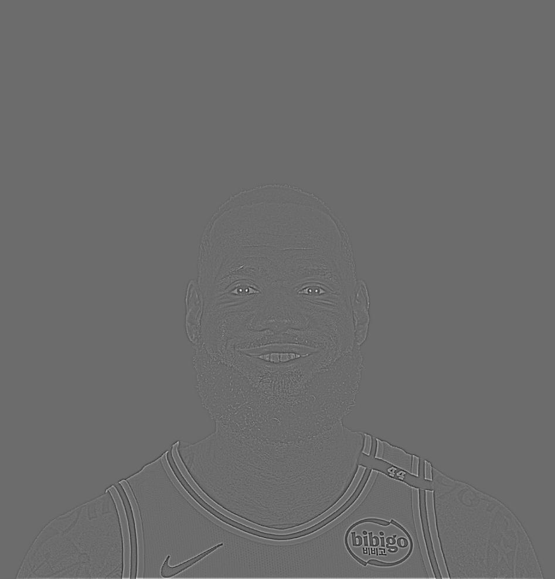
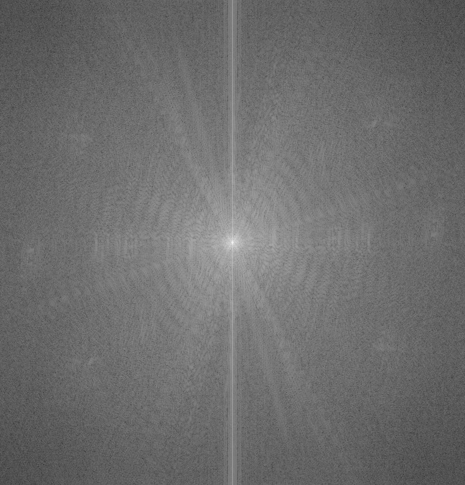
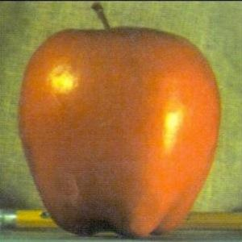
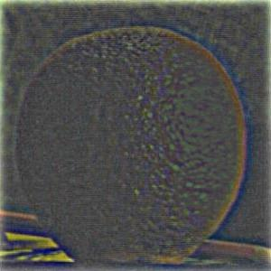
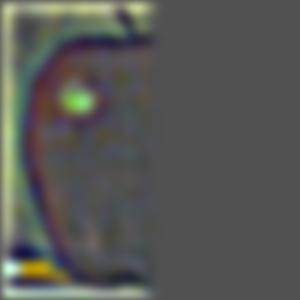
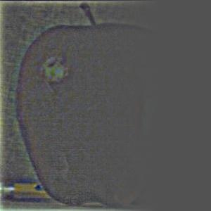
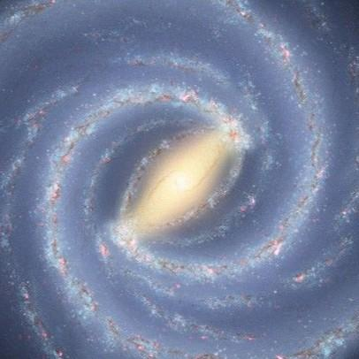
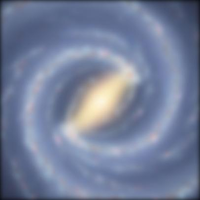
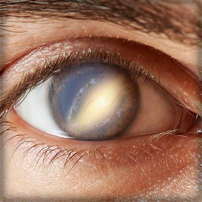

Part 1.1: Convolution Implementations
2D Convolution (Implementations)
def convolve_4loops(im, kernel):
im = np.asarray(im, dtype=float)
kernel = np.asarray(kernel, dtype=float)
flipped_k = np.flip(kernel)
im_h, im_w = im.shape
k_h, k_w = flipped_k.shape
pad_h = k_h - 1
pad_w = k_w - 1
im_padded = np.pad(im, ((pad_h, pad_h), (pad_w, pad_w)), mode = 'constant', constant_values = 0)
out_h = im_h + k_h - 1
out_w = im_w + k_w - 1
out = np.zeros((out_h, out_w))
for i in range(out_h):
for j in range(out_w):
for r in range(k_h):
for c in range(k_w):
out[i,j] += im_padded[i + r, j + c] * flipped_k[r, c]
return out
def convolve_2loops(im, kernel):
im = np.asarray(im, dtype=float)
kernel = np.asarray(kernel, dtype=float)
flipped_k = np.flip(kernel)
im_h, im_w = im.shape
k_h, k_w = flipped_k.shape
pad_h = k_h - 1
pad_w = k_w - 1
im_padded = np.pad(im, ((pad_h, pad_h), (pad_w, pad_w)), mode = 'constant', constant_values = 0)
out_h = im_h + k_h - 1
out_w = im_w + k_w - 1
out = np.zeros((out_h, out_w))
for i in range(out_h):
for j in range(out_w):
out[i,j] = np.sum(im_padded[i : i + k_h, j: j + k_w] * flipped_k)
return outRuntime & Boundaries
Runtime. 9×9 box filter on my selfie — 4-loops: 6m16s; 2-loops: 1m06s (~5.5× faster than 4-loops); SciPy convolve2d: ~1s (~360× faster than 4-loops).
Runtime Convolution Results (selfie × 9×9) scipy.signal.convolve2D: ~1s
Boundaries. Zero-padding with (kw −1) columns left/right and (kh −1) rows top/bottom (full convolution), matching mode='full' in scipy.signal.convolve2d, ensures every boundary pixel is covered exactly once by the kernel.
9x9 Box Filter (Selfie)
Dx Filter (Selfie)
Dy Filter (Selfie)
4 Loop Implementation
2 Loop Implementation
scipy.signal.convolve2d
2 Loop Implementation
scipy.signal.convolve2d
2 Loop Implementation
scipy.signal.convolve2d
Part 1.2: Dx , Dy , Gradient Magnitude & Edge
Dx
Dy
Gradient Magnitude
Binarized Edge
Threshold choice. I found a gradient-magnitude threshold of 0.27 (values > > 0.27 → 255; ≤ 0.27 → 0) to balance showing most edges while suppressing noise.
Part 1.3: Derivative of Gaussian (DoG) Filter
2D Gaussian Filter & Convolutions
2D Gaussian Filter (size = 9, sigma = 1.5)
Cameraman convolved with 2D Gaussian
Blurry Cameraman convolved with Dx
Blurry Cameraman convolved with Dy
DoG Filters
Derivative of Gaussian (X Direction)
Derivative of Gaussian (Y Direction)
DoG Convolutions
Cameraman convolved with DoG (x)
Cameraman convolved with DoG (y)
Gradient Magnitude Comparison
Gaussian Smoothing + Derivative Filters
DoG Filters
Finite Difference Method
DoG vs. Finite Differences. The DoG convolutions produce brighter, more numerous edges with less noise than the finite-difference result. This matches the gradient from first blurring with a Gaussian then applying derivative filters, which shows the associative property of convolution.
Part 2.2: Hybrid Images
Final Examples
Derek Nutmeg Hybrid Derek + Nutmeg
curl1 curl2 Hybrid curl1 + curl2
curry lebron Hybrid curry3 + lebron4
LeBron–Curry Walkthrough
Original
Curry LeBron
Aligned Gray Images
Curry (aligned gray) LeBron (aligned gray)
Filtered Images
Curry Low Pass LeBron High Pass
Cutoff frequency choice : Curry Low Pass → sigma = 10 (kernel size 20); LeBron High Pass → sigma = 2 (kernel size 7)
FFT Images
FFT Curry
FFT LeBron FFT Low-Pass Curry FFT High-Pass LeBron FFT Hybrid
Final Image
Final Hybrid (Curry + LeBron)
Part 2.3 + 2.4: Gaussian & Laplacian Stacks + Multiresolution Blending
The “Oraple” (Apple + Orange)
Original Images
apple.jpg orange.jpg
Apple Gaussian Stack (6 Levels)
apple_gaussian_0.jpg
apple_gaussian_1.jpg apple_gaussian_2.jpg apple_gaussian_3.jpg apple_gaussian_4.jpg apple_gaussian_5.jpg
Orange Gaussian Stack (6 Levels)
orange_gaussian_0.jpg orange_gaussian_1.jpg orange_gaussian_2.jpg orange_gaussian_3.jpg orange_gaussian_4.jpg orange_gaussian_5.jpg
Apple Laplacian Stack (6 Levels)
apple_laplacian_0.jpg apple_laplacian_1.jpg apple_laplacian_2.jpg apple_laplacian_3.jpg apple_laplacian_4.jpg apple_laplacian_5.jpg
Orange Laplacian Stack (6 Levels)
orange_laplacian_0.jpg
orange_laplacian_1.jpg orange_laplacian_2.jpg orange_laplacian_3.jpg orange_laplacian_4.jpg orange_laplacian_5.jpg
Simple Half Mask
apple_half_mask.jpg
Simple Half Mask Gaussian Stack (6 Levels)
half_mask_gaussian_0.jpg half_mask_gaussian_1.jpg half_mask_gaussian_2.jpg half_mask_gaussian_3.jpg half_mask_gaussian_4.jpg half_mask_gaussian_5.jpg
Apple Laplacian Stack × Simple Half Mask Gaussian Stack
apple_half_masked_stack_0.jpg apple_half_masked_stack_1.jpg apple_half_masked_stack_2.jpg
apple_half_masked_stack_3.jpg apple_half_masked_stack_4.jpg apple_half_masked_stack_5.jpg
Orange Laplacian Stack × (1 − Simple Half Mask Gaussian Stack)
orange_half_masked_stack_0.jpg orange_half_masked_stack_1.jpg orange_half_masked_stack_2.jpg orange_half_masked_stack_3.jpg orange_half_masked_stack_4.jpg orange_half_masked_stack_5.jpg
Apple–Orange Combined Stack (Simple Mask)
apple_orange_half_masked_stack_0.jpg apple_orange_half_masked_stack_1.jpg apple_orange_half_masked_stack_2.jpg apple_orange_half_masked_stack_3.jpg apple_orange_half_masked_stack_4.jpg apple_orange_half_masked_stack_5.jpg
Final Blended Image (Simple)
sum_apple_orange_simple.jpg
Smooth Window Half Mask
apple_smooth_mask.jpg
Smooth Half Mask Gaussian Stack (6 Levels)
smooth_mask_gaussian_0.jpg smooth_mask_gaussian_1.jpg smooth_mask_gaussian_2.jpg smooth_mask_gaussian_3.jpg smooth_mask_gaussian_4.jpg smooth_mask_gaussian_5.jpg
Apple Laplacian × Smooth Half Mask Gaussian
apple_smooth_masked_stack_0.jpg
apple_smooth_masked_stack_1.jpg apple_smooth_masked_stack_2.jpg apple_smooth_masked_stack_3.jpg apple_smooth_masked_stack_4.jpg apple_smooth_masked_stack_5.jpg
Orange Laplacian × (1 − Smooth Half Mask Gaussian)
orange_smooth_masked_stack_0.jpg orange_smooth_masked_stack_1.jpg orange_smooth_masked_stack_2.jpg orange_smooth_masked_stack_3.jpg orange_smooth_masked_stack_4.jpg orange_smooth_masked_stack_5.jpg
Apple–Orange Combined Stack (Smooth Half Mask)
apple_orange_smooth_masked_stack_0.jpg apple_orange_smooth_masked_stack_1.jpg apple_orange_smooth_masked_stack_2.jpg apple_orange_smooth_masked_stack_3.jpg apple_orange_smooth_masked_stack_4.jpg apple_orange_smooth_masked_stack_5.jpg
Final Blended Image (Smooth)
sum_apple_orange_smooth.jpg
Galaxy Eye (Galaxy + Eye)
Original Images
galaxy.jpg eye.jpg
Galaxy Gaussian Stack (6 Levels)
galaxy_gaussian_0.jpg
galaxy_gaussian_1.jpg
galaxy_gaussian_2.jpg galaxy_gaussian_3.jpg galaxy_gaussian_4.jpg galaxy_gaussian_5.jpg
Eye Gaussian Stack (6 Levels)
eye_gaussian_0.jpg eye_gaussian_1.jpg eye_gaussian_2.jpg eye_gaussian_3.jpg eye_gaussian_4.jpg eye_gaussian_5.jpg
Galaxy Laplacian Stack (6 Levels)
galaxy_laplacian_0.jpg galaxy_laplacian_1.jpg galaxy_laplacian_2.jpg galaxy_laplacian_3.jpg galaxy_laplacian_4.jpg galaxy_laplacian_5.jpg
Eye Laplacian Stack (6 Levels)
eye_laplacian_0.jpg eye_laplacian_1.jpg eye_laplacian_2.jpg eye_laplacian_3.jpg eye_laplacian_4.jpg eye_laplacian_5.jpg
Radial Mask
moon_smooth_half_mask.jpg (radial mask)
Smooth Radial Mask Gaussian Stack (6 Levels)
radial_mask_gaussian_0.jpg radial_mask_gaussian_1.jpg radial_mask_gaussian_2.jpg radial_mask_gaussian_3.jpg radial_mask_gaussian_4.jpg radial_mask_gaussian_5.jpg
Galaxy Laplacian × Radial Gaussian Stack
galaxy_radial_masked_stack_0.jpg galaxy_radial_masked_stack_1.jpg galaxy_radial_masked_stack_2.jpg galaxy_radial_masked_stack_3.jpg galaxy_radial_masked_stack_4.jpg galaxy_radial_masked_stack_5.jpg
Eye Laplacian × (1 − Radial Mask Gaussian Stack)
eye_radial_masked_stack_0.jpg eye_radial_masked_stack_1.jpg eye_radial_masked_stack_2.jpg eye_radial_masked_stack_3.jpg eye_radial_masked_stack_4.jpg eye_radial_masked_stack_5.jpg
Galaxy–Eye Combined Stack (Radial Mask)
galaxy_eye_sradial_masked_stack_0.jpg galaxy_eye_sradial_masked_stack_1.jpg galaxy_eye_sradial_masked_stack_2.jpg galaxy_eye_sradial_masked_stack_3.jpg galaxy_eye_sradial_masked_stack_4.jpg galaxy_eye_sradial_masked_stack_5.jpg
Final Blended Image

sum_galaxy_eye.jpg
Moon Sun (Moon + Sun)
Original Images
moon.jpg sun.jpg
Moon Gaussian Stack (6 Levels)
moon_gaussian_0.jpg moon_gaussian_1.jpg moon_gaussian_2.jpg moon_gaussian_3.jpg moon_gaussian_4.jpg moon_gaussian_5.jpg
Sun Gaussian Stack (6 Levels)
sun_gaussian_0.jpg sun_gaussian_1.jpg sun_gaussian_2.jpg sun_gaussian_3.jpg sun_gaussian_4.jpg sun_gaussian_5.jpg
Moon Laplacian Stack (6 Levels)
moon_laplacian_0.jpg moon_laplacian_1.jpg moon_laplacian_2.jpg moon_laplacian_3.jpg moon_laplacian_4.jpg moon_laplacian_5.jpg
Sun Laplacian Stack (6 Levels)
sun_laplacian_0.jpg sun_laplacian_1.jpg sun_laplacian_2.jpg sun_laplacian_3.jpg sun_laplacian_4.jpg sun_laplacian_5.jpg
Smooth Half Mask Gaussian Stack (6 Levels)
moon_smooth_mask_gaussian_0.jpg moon_smooth_mask_gaussian_1.jpg moon_smooth_mask_gaussian_2.jpg moon_smooth_mask_gaussian_3.jpg moon_smooth_mask_gaussian_4.jpg moon_smooth_mask_gaussian_5.jpg
Moon Laplacian × Smooth Half Mask Gaussian
moon_smooth_masked_stack_0.jpg moon_smooth_masked_stack_1.jpg moon_smooth_masked_stack_2.jpg moon_smooth_masked_stack_3.jpg moon_smooth_masked_stack_4.jpg moon_smooth_masked_stack_5.jpg
Sun Laplacian × (1 − Smooth Half Mask Gaussian)
sun_smooth_masked_stack_0.jpg sun_smooth_masked_stack_1.jpg sun_smooth_masked_stack_2.jpg sun_smooth_masked_stack_3.jpg sun_smooth_masked_stack_4.jpg sun_smooth_masked_stack_5.jpg
Moon–Sun Combined Stack (Smooth Half Mask)
moon_sun_smooth_masked_stack_0.jpg moon_sun_smooth_masked_stack_1.jpg moon_sun_smooth_masked_stack_2.jpg moon_sun_smooth_masked_stack_3.jpg moon_sun_smooth_masked_stack_4.jpg moon_sun_smooth_masked_stack_5.jpg
Final Blended Image
sum_moon_sun.jpg